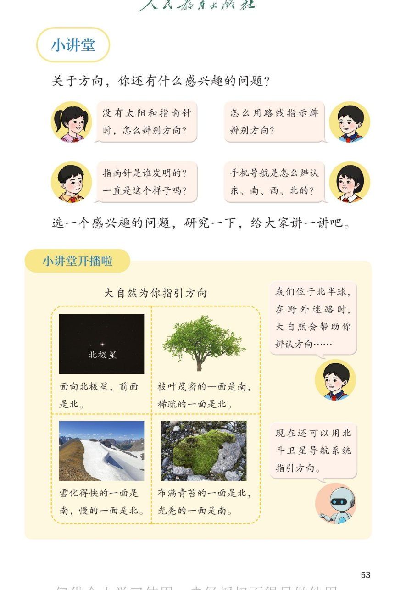

🔊 综合与实践 · 校园小导游 · 课本第 53 页 · 小讲堂：大自然为你指引方向
人教版《数学》二年级上册 · 有声图文带读 · 先想后看解析 · 北极星、树叶、积雪、青苔辨方向
题数
6
认知
2
强化
3
拓展
1
本页重点
提出方向问题 · 大自然辨方向四个妙招 · 北斗导航
🎧 分两步学：
① 解析教材图片
——纯声音读图，读到哪一块哪一块闪动提示；关键处先倒计时让你思考，再在图片下方给出解析并朗读。
② 分层提问练习
——六道分层题（认知 / 强化 / 拓展），先思考再展开解析、朗读参考答案；这一步不再回到图片。
也可以随时点任意一句话、图上任意一块单独听；点课本文字卡还会展开答案。
教材图片（点块听读，读到哪块哪块闪）

📖 人教版《数学》二年级上册 · 课本第 53 页 · 图片仅供个人学习，版权归人民教育出版社所有
🤔 想一想（点我可跳过）
课本的文字（点句子：听读 + 看答案）
小讲堂问题
四个感兴趣的方向问题
看答案 ▾
① 没有太阳和指南针时，怎么辨别方向？
② 怎么用路线指示牌辨别方向？
③ 指南针是谁发明的？一直是这样吗？
④ 手机导航是怎么辨认东南西北的？
🌈 选一个感兴趣的问题研究，讲给大家听
大自然妙招
四个辨方向妙招
看答案 ▾
🌟
北极星
：面向它，前面是
北
；
🌳
树叶
：茂密一面是
南
，稀疏一面是
北
；
❄️
积雪
：化得快一面是
南
，慢一面是
北
；
🪨
青苔
：长青苔一面是
北
，光亮一面是
南
。
小知识
为什么这些妙招管用？
看答案 ▾
我们住在
北半球
，太阳偏在天空的
南边
；
向阳的一面（南面）树叶密、雪化得快、石头光亮；
背阴的一面（北面）凉，容易长
青苔
。
科技辨方向
北斗卫星导航系统
看答案 ▾
北斗卫星导航系统
是我国自主建设的卫星导航系统；
手机导航、渔船出海、救灾定位都用它；
🌈 古人看星星，今人用北斗，方向永远在手
分层提问练习（先想后看解析）
🌟
认知
面向北极星，前面是什么方向？
看解析
🤔 想一想
解析：
前面是
北
。
北极星挂在正北的天空，是夜里的"方向灯"。
🌳
认知
大树哪一面枝叶茂密？哪一面稀疏？
看解析
🤔 想一想
解析：
茂密的一面是南
，稀疏的一面是
北
。
南面阳光多，树叶长得旺。
🌙
强化
晚上在野外迷路又没有指南针，怎么找到北方？
看解析
🤔 想一想
解析：
找
北极星
：面向它，前面是
北
；
再用相对关系和顺时针顺序推出
南、西、东
。
☀️
强化
为什么枝叶茂密的一面是南？
看解析
🤔 想一想
解析：
我们位于
北半球
，太阳偏在
南边
的天空；
朝南一面
阳光足
，枝叶长得茂密。
❄️
强化
雪化得快的一面为什么是南？青苔为什么长在北面？
看解析
🤔 想一想
解析：
南面
向阳温暖
，雪化得快；北面背阴，雪化得慢；
青苔喜欢
阴凉潮湿
，所以长在背阴的
北面
。
💡 妙招背后都是"向阳与背阴"的道理
🌈
拓展
选一个方向问题研究一下，讲给大家听。
看解析
🤔 想一想
解析：
示例：指南针是我国古代
四大发明
之一，最早叫
司南
；
把磁石磨成勺子放在光滑的盘上，勺柄会指向南方；后来逐步改进成罗盘和现代指南针。
🌈 小讲堂开讲：查一查、试一试，讲给全班听
① 解析教材图片
② 分层提问练习
⏹ 停止
纯声音 + 高亮跟随 · 想好才出解析
← 返回导航